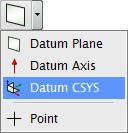
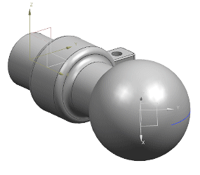

构造一个由现有基准 CSYS 旋转，并平移至草图圆弧中心的基准 CSYS。
在特征工具条上，点击基准/点下拉菜单中的基准 CSYS。

在基准 CSYS 对话框的类型列表中，选择偏置 CSYS。
在参考 CSYS 组的参考列表中，选择选定的 CSYS。
在图形窗口中选择现有的基准 CSYS。
在 CSYS 偏置组中，点击先平移。
在 X 输入框中，键入 p4。
在角度 Y 输入框中，键入45。
在角度 Z 输入框中，键入-35。
将其它平移和旋转值均设为0。
点击确定。
